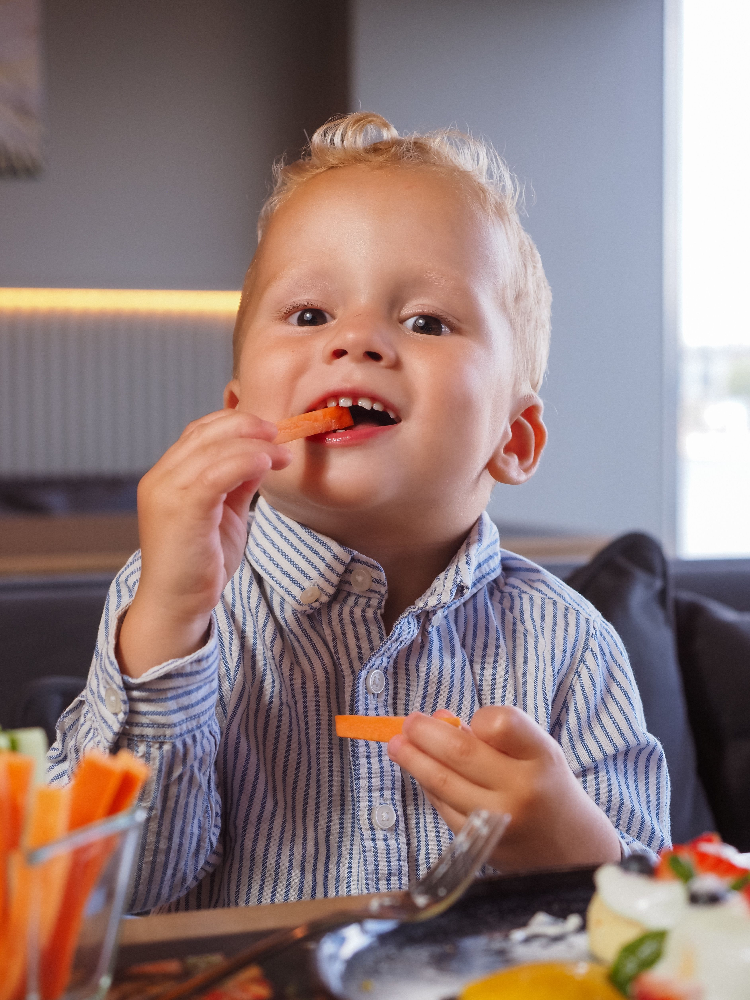
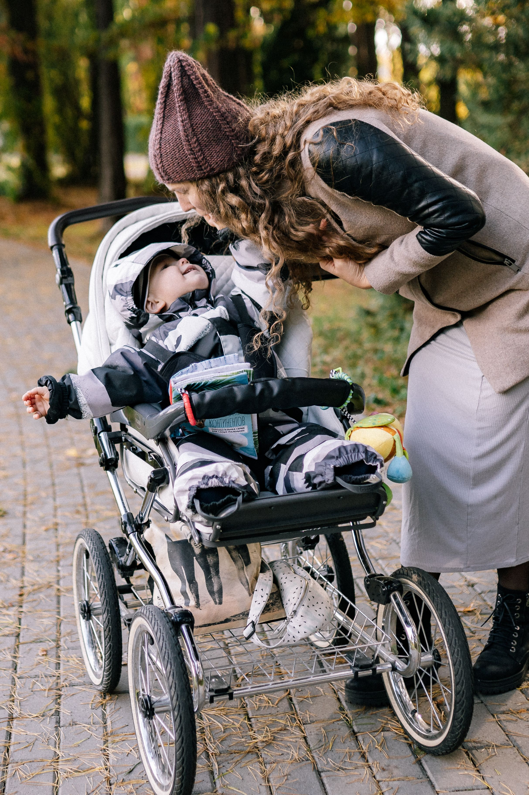
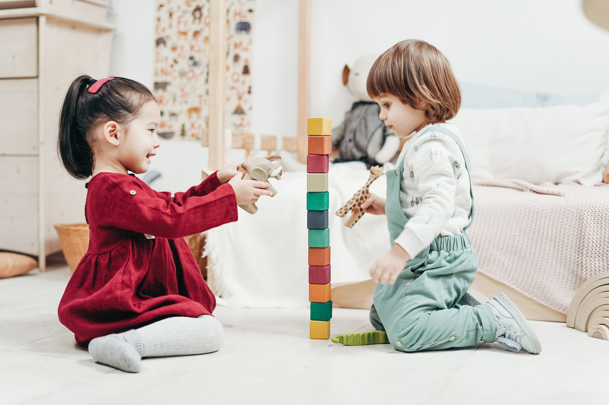

♥
Praktisk information
Her finder I alt det praktiske, der er rart at vide, når jeres barn skal passes hos Krudt, Kram og Krea.
◷
Åbningstider
Mandag - torsdag: 07.00–16.30
Fredag: 07.00–16.00
Lørdag og søndag: Lukket
Hvad er inkluderet i prisen?
Hos Krudt, Kram og Krea er der sørget for det meste, så I som forældre kan fokusere på at give jeres barn en god start på dagen.

🍎 Mad og måltider
Jeg sørger for en sund og varieret kost i løbet af dagen.
Der tilbydes:
- Morgenmad
- Formiddagsmad
- Frokost
- Eftermiddagsmad
Jeg tager naturligvis hensyn til allergier, religiøse kosthensyn, vegetariske ønsker og andre særlige behov.
🍼 Bleer og plejeprodukter
Jeg sørger for bleer, klude, solcreme og andre almindelige plejeprodukter.
Hvis I som forældre har særlige ønsker til bestemte mærker eller produkter, skal I selv medbringe disse.
🌿 Udstyr til børnene
Jeg sørger for barnevogne, sovetelte, dyner, højstole, hagesmække og andet nødvendigt udstyr.
🎨 Legetøj og kreative materialer
Dagplejen har et udvalg af alderssvarende legetøj og kreative materialer, som understøtter børnenes leg, nysgerrighed og udvikling.
Der er plads til både fantasi, fordybelse og masser af kreativ udfoldelse.
💰 Pris og betaling
Hos Krudt, Kram og Krea svarer forældrenes egenbetaling til prisen for en almindelig institutionsplads i barnets bopælskommune. Derudover ydes et kommunalt tilskud til den private pasningsordning.
Den samlede pris afhænger derfor af, hvilken kommune barnet bor i.
Eksempel på månedlig betaling (2026)
Nedenstående er et eksempel på priser og tilskud i Københavns Kommune i 2026.
| Betaling | Beløb |
|---|---|
| Forældrenes egenbetaling | 3.489 kr. |
| Kommunalt tilskud | 8.909 kr. |
| Samlet pris | 12.398 kr. |
Vigtigt at vide: Som forælder betaler du kun egenbetalingen på 3.489 kr. om måneden i dette eksempel. Det kommunale tilskud er ikke en ekstra udgift for dig.
Priserne er vejledende og kan variere afhængigt af barnets bopælskommune.
Hvordan foregår betalingen?
Betalingen sker forud hver måned og skal være betalt senest den første hverdag i måneden.
Det kommunale tilskud udbetales bagud, altså i slutningen af måneden.
Der betales for alle 12 måneder om året, også under ferie og sygdom.
Navnet Tina Elmose Christensen skal altid fremgå af betalingsoverførslerne.
Hvem kan få kommunalt tilskud?
Krudt, Kram og Krea er en privat pasningsordning under fritvalgsordningen og kan modtage børn fra alle kommuner.
Tilskuddets størrelse afhænger af barnets bopælskommune.
For at søge tilskud i Københavns Kommune skal du og dit barn have bopæl på samme adresse i kommunen.
Jeg anbefaler, at I undersøger tilskudsreglerne på jeres egen kommunes hjemmeside.
Er der søskenderabat?
Har I flere børn i dagpleje, vuggestue, børnehave, fritidsinstitution eller privat pasningsordning, kan I være berettiget til søskendetilskud.
I Københavns Kommune gives søskendetilskud automatisk efter de gældende regler.
I betaler fuld pris for den dyreste plads, mens der kan ydes tilskud til den billigere plads.
Søskendetilskuddet kan ifølge de oplyste regler udgøre op til 42,8 % af prisen på et alderssvarende dagtilbud uden mad.
Reglerne kan variere fra kommune til kommune.
Årlig prisregulering
Prisen reguleres hvert år den 1. januar.
Der tages forbehold for ændringer i både priser og kommunale tilskud.
📅 Ferie og helligdage
Hos Krudt, Kram og Krea er det vigtigt, at I som forældre har mulighed for at planlægge jeres hverdag og ferie i god tid.
Her finder I årets planlagte ferier, helligdage og øvrige lukkedage.
Ferieplan 2027
| Ferie | Dato |
|---|---|
| 🐣 Påskeferie | 22.–29. marts 2027 |
| ☀️ Sommerferie | Uge 27, 28 og 29 |
| 🍂 Efterårsferie | Uge 42 |
| 🎄 Juleferie | 23.–27. december 2027 samt 2. januar 2028 |
Helligdage og øvrige fridage
| Dato | Anledning |
|---|---|
| 6. maj 2027 | Kristi himmelfartsdag |
| 7. maj 2027 | Fridag |
| 17. maj 2027 | 2. pinsedag |
| 27. august 2027 | Fridag |
| 5.–8. november 2027 | Fridage |
Ændringer og varsling
Ferieplanen er udarbejdet med forbehold for ændringer.
Der kan i særlige situationer forekomme enkelte ekstra fridage.
Hvis der sker ændringer, vil I blive informeret i så god tid som muligt.
Alternativ pasning ved ferie
Når jeg holder fri eller ferie, står jeg selv for at arrangere alternativ pasning.
På den måde er der mulighed for pasning af jeres barn, selvom jeg ikke selv er til stede.
I vil naturligvis blive informeret om de praktiske forhold.
Godt at vide
Der betales for dagplejepladsen alle 12 måneder om året, også under ferie og sygdom.
Har I spørgsmål til ferieplanen eller alternativ pasning, er I altid velkomne til at kontakte mig.
🌱 Særlige hensyn og ønsker
Jeg er altid åben for en snak, hvis jeres barn har særlige behov, eller hvis I som forældre har ønsker til hverdagen i dagplejen.
Det vigtigste er, at vi sammen skaber de bedste rammer for jeres barn.
Sygdom og fravær
Hos Krudt, Kram og Krea passer jeg ikke syge børn.
Klik på et spørgsmål for at læse mere.
Hvornår må mit barn komme i dagpleje?
Hvis jeres barn bliver sygt, skal det blive hjemme, indtil det er raskt og kan deltage i dagplejens almindelige aktiviteter.
Barnet skal have det godt og have overskud til en hel dag med leg og aktiviteter.
Et barn kan godt være sygt uden at have feber.
Hvordan raskmelder jeg mit barn?
Jeg vil gerne have besked dagen før jeres barn kommer tilbage efter sygdom.
Hvis barnet ikke er helt frisk aftenen før, anbefaler jeg, at det bliver hjemme den efterfølgende dag.
På den måde mindsker vi risikoen for smitte og sikrer, at barnet får tid til at komme sig.
Hvad hvis mit barn bliver sygt i løbet af dagen?
Hvis jeres barn bliver sygt i dagplejen, kontakter jeg jer hurtigst muligt.
I vil blive bedt om at hente barnet så hurtigt som muligt.
Hvad sker der, hvis Tina selv bliver syg?
Skulle jeg selv blive syg, kontakter jeg jer hurtigst muligt og senest kl. 06.00 om morgenen.
Herefter skal I selv finde alternativ pasning.
Hvilke retningslinjer gælder ved sygdom?
Jeg tager udgangspunkt i Sundhedsstyrelsens anbefalinger om sygdom og smitteforebyggelse hos børn i alderen 0–3 år.

Har I spørgsmål?
I er altid velkomne til at kontakte mig for en uforpligtende snak eller et besøg.
Kontakt mig →